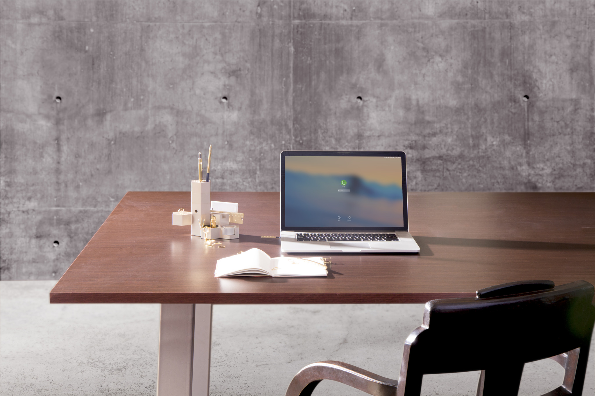

<!DOCTYPE html>
<html>
<meta name="robots" content="noindex">
<head>
<meta charset="utf-8">
<meta name="viewport" content="width=device-width">
<style type="text/css">
*{
    margin: 0;
    padding: 0;
}
#small {
    box-sizing: border-box;
    /*width: 200px;
    height: 200px;*/
    border: 1px solid black;
    text-align: center;
    position: relative;
    float: left;
}
#small img{
   width:100%;
   height: 100%;
}
/*标记方块100与大图的200比例必须等于大图的放大比例,在此为200%*/
#mask {
   /* width: 100px;
    height: 100px;*/
    background-color: rgba(214, 111, 193, 0.3);
    position: absolute;
    top: 0;
    left: 0;
}
#big {
  box-sizing: border-box;
 /* width: 200px;
  height: 200px;*/
  border: 1px solid black;
 /* float: left;*/
  background-color:pink;
  xoverflow: hidden;
  /*position: relative;
  margin-top:500px;*/
}
#big img{
    box-sizing: border-box;
   /* width:200%;
    height: 200%;*/
    border:1px solid;
}
#hid{
    box-sizing: border-box;
    position: absolute;
    top:0;
    left:0;
   /* width:200px;
    height: 200px;*/
    border: 1px solid black;
    background-color: rgba(0,0,0,0.1);
    xdisplay: none;
}
</style>
</head>
<body>
<div id="box">
  <!--  <div id="small">
      
      <div id="mask"></div>
   </div>
   <div id="big">
       
       <div id="hid"></div>
   </div> -->
</div>
<script type="text/javascript" src="jquery.js"></script>
<script type="text/javascript" src="jqzoom.js"></script>
<script type="text/javascript">
//首先或许要操作的元素
// function getId(tag){
//   return document.getElementById(tag)
// }
// var box=getId("box");
// var small=getId("small")
// var mask=getId("mask")
// var big=getId("big")
// var pic=big.children[0]
// //鼠标移动到图片上出现两个效果

// small.onmouseover=function(){
//     mask.style.display="block"
//     big.style.display="block"
// }
// small.onmouseout=function(){
//     mask.style.display="none"
//     big.style.display="none"
// }
// //设置小图的焦点框，跟随鼠标；
// small.onmousemove=function(e){
//     var marginL=box.offsetLeft
//     var marginT=box.offsetTop
//     var currentX= e.clientX
//     var currentY= e.clientY
//     var x=currentX-marginL-mask.offsetWidth/2
//     var y=currentY-marginT-mask.offsetHeight/2

//     // （4）闲置焦点框的位置的移动 
//     //   1）上一步执行完成后焦点框的移动是不受任何闲置的，在我们浏览购物网站的过程中，明显可以感受到焦点框不容许移动的小图的外面，造成不好的用户体验； 
//     //   2）要限制焦点框的移动，主要是x，y变化超过容许值时，给他一个固定的值； 
//     if(x<0){x=0}
//     if(x>small.offsetWidth-mask.offsetWidth){
//       x=small.offsetWidth-mask.offsetWidth
//     }
//     if(y<0){y=0}
//     if(y>small.offsetHeight-mask.offsetHeight){
//       y=small.offsetHeight-mask.offsetHeight
//     }
//     mask.style.left=x+"px"
//     mask.style.top=y+"px"

//     //（5）设置大图的显示 
//     // 1）在big盒子中实现图片的移动，应该想到-margin值； 
//     // 2）移动多少距离可以利用一个固定比例乘以mask的left和top值，想一下焦点区的左上角和大图框的左上角显示的位置是相同的！！！这一点就不是很难理解了 
//     var relativeX=mask.offsetLeft
//     var relativeY=mask.offsetTop
//     var width=mask.offsetWidth
//     var height=mask.offsetHeight
//     var proporationX=pic.offsetWidth/small.offsetWidth
//     var proporationY=pic.offsetHeight/small.offsetHeight
//     pic.style.marginLeft=(-relativeX)*proporationX+"px"
//     pic.style.marginTop=(-relativeY)*proporationY+"px"
// }

var a=new jqzoom($("#box"),{
    zoom:2,
    position:"left",
    fromSrc:"imgs/bb.jpg",
    toSrc:"imgs/bb.jpg",
})
</script>
</body>
</html>